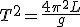

उद्देश्य
उद्देश्य
१ . सरल लोलक का अध्ययन करना।
२ . L-T तथा L-T2 आलेख ज्ञात करना।
३ . लोलक की प्रभावी लम्बाई / गुरुत्वीय त्वरण ज्ञात करना।
आवश्यक सामग्री ( वास्तविक प्रयोग )
- क्लैंप स्टैंड
- कटी हुई कॉर्क
- हुक सहित भारी वस्तु (लोहे/पीतल की) का गोलीय गोला (बॉब)
- एक हल्का, उन्नत धागा (लगभग 2 मीटर लंबा) सूती धागा/डोरी
- विराम घड़ी (स्टॉपवॉच)
- मीटर स्केल
- ग्राफ पेपर
- पेंसिल तथा रबर
सिद्धांत
सरल लोलक की गति सरल आवर्त गति (SHM) होती है क्योंकि गति करते समय लोलक के गोला (बॉब) का त्वरण इसकी मध्यस्थिति से विस्थापन के अनुपात में होता है तथा सदैव माध्य स्थिति की ओर निर्देशित होता है।
छोटे आयाम के दोलनों के लिए सरल लोलक का आवर्त काल T निम्नलिखित समीकरण द्वारा व्यक्त किया जाता है:
 T= 2\pi \sqrt{\frac{L}{g}जहाँ:
T= 2\pi \sqrt{\frac{L}{g}जहाँ:
L = लोलक की लंबाई
g = प्रयोग के स्थान पर गुरुत्वीय त्वरण
इस समीकरण को अन्य रूप में भी लिखा जा सकता है:
T^2= \frac{4\pi^2 L}{g}